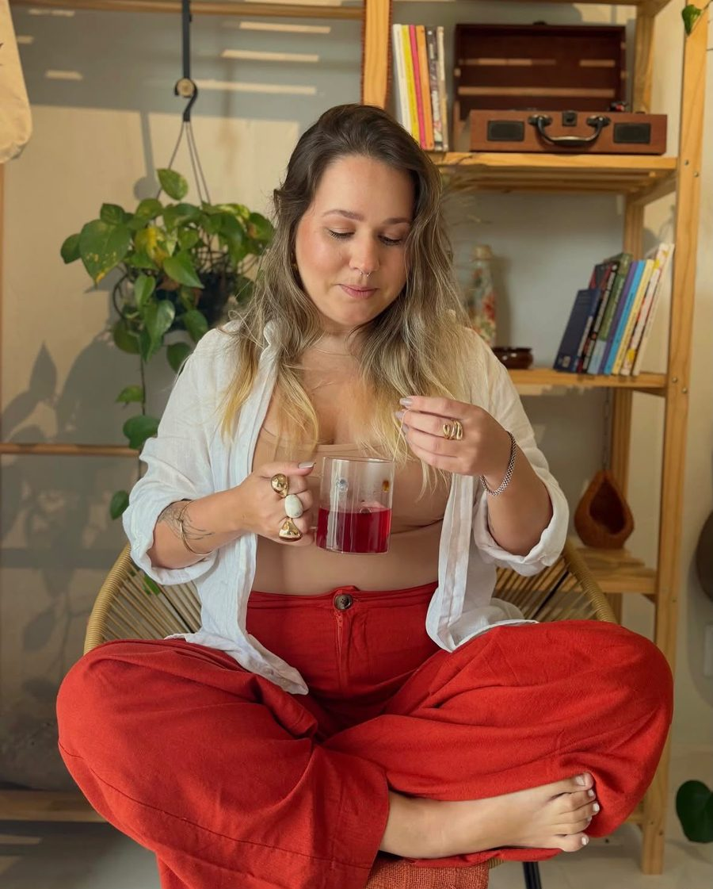
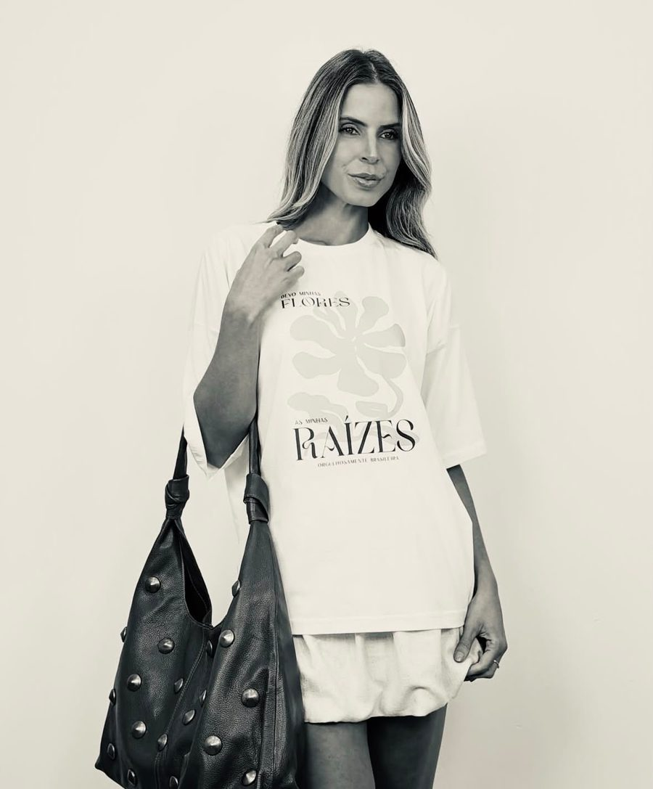
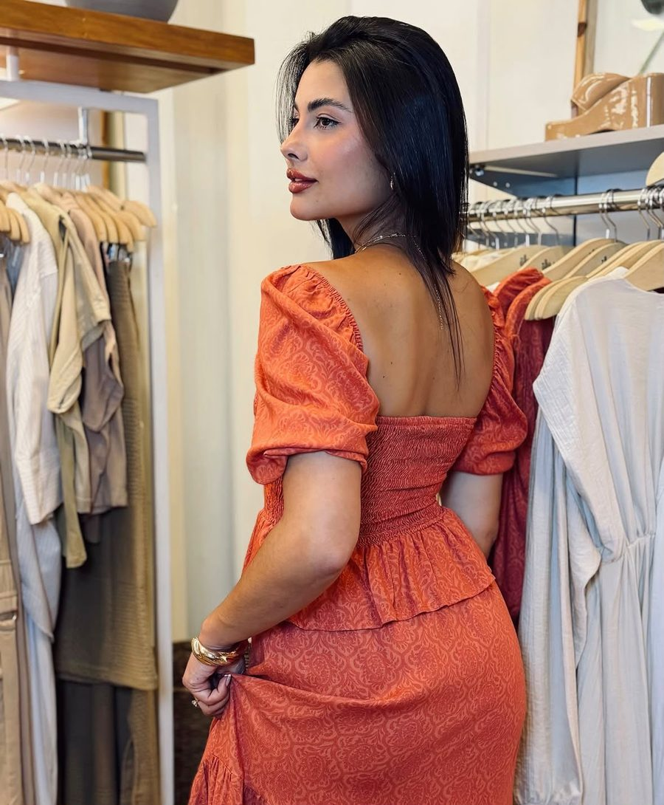
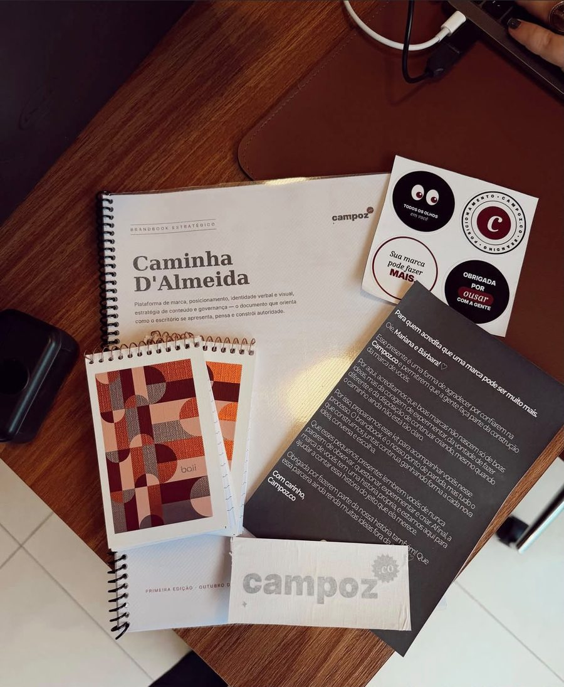
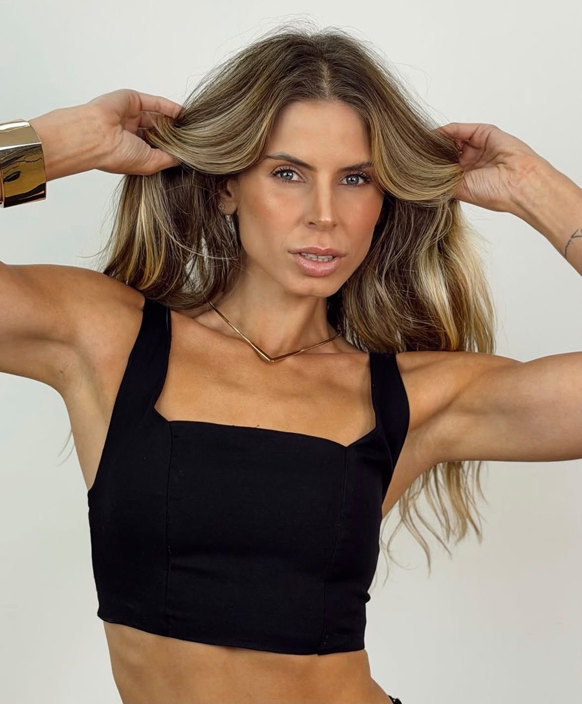
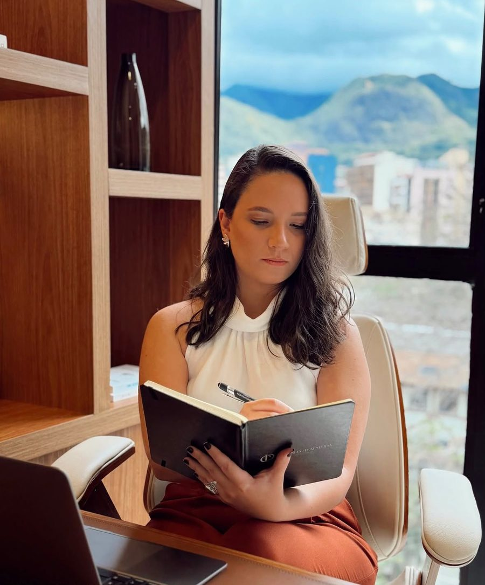
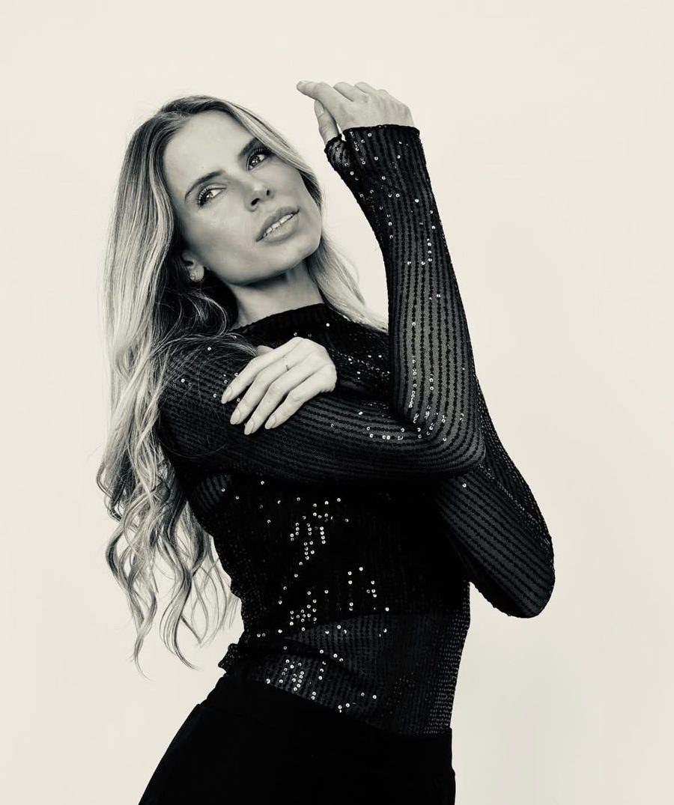
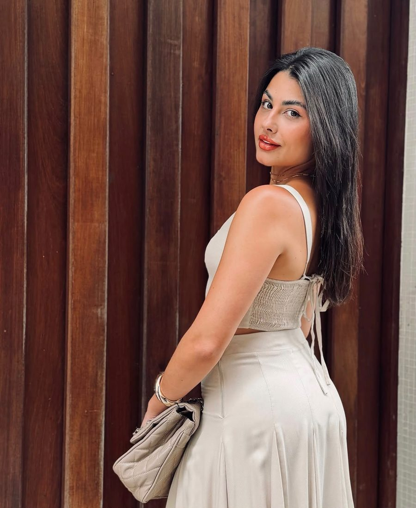
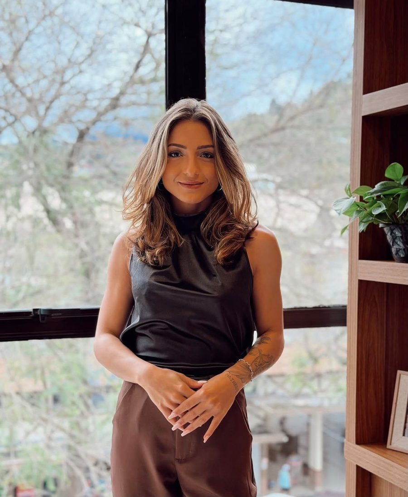

Branding & posicionamento
Not made to
blend in. Made to
stand out.
Marketing com cultura, psicologia e moda — para marcas que não nasceram para passar despercebidas.
Depoimentos
Quem ousou com a gente, conta.
Palavras de quem confiou a marca à campoz: marcas que deixaram de se misturar e passaram a ser lembradas.
Quero ousar também“Melhor social media que já contratamos. Recomendo de olhos fechados!”
Como cliente me sinto honrada por ter alguém com tantos talentos na equipe!
Você arrasa! Muito obrigada sua linda, eu amei!!
Você entendeu a alma da marca em uma reunião. Os stories estão com a nossa cara. 🔥
Dudinha te desejo tudo de bom, além de você ser um amor, você é muito competente!
Melhor social media que já contratamos. Recomendo de olhos fechados!
Quem está por trás
Duda, a mente
da campoz.co
A campoz.co nasceu de uma inquietação: ver marcas incríveis se escondendo atrás de uma comunicação que não tinha a cara delas.
Unimos estratégia e estética para construir posicionamentos que não pedem licença. Cada projeto começa entendendo quem você é, quem você quer atrair e o que faz sua marca ser impossível de ignorar — e termina em conteúdo, identidade e presença que convertem.
- 01 Cultura
- 02 Psicologia
- 03 Moda
“Sua marca pode fazer mais. Vamos ousar.”
Portfólio
Marcas que não se misturam
Identidades, campanhas e conteúdos criados para ficar na memória.









Processo
Do primeiro papo à marca que ninguém esquece
Um caminho claro, com você participando de cada etapa.
-
01
Conversa inicial
Um bate-papo para entender sua marca, seu momento e onde você quer chegar.
-
02
Diagnóstico
Analisamos seu perfil, seus concorrentes e seu público para encontrar o que está travando sua marca.
-
03
Estratégia & posicionamento
Definimos o tom de voz, a estética e a linha editorial — o jeito único da sua marca aparecer.
-
04
Planejamento
Montamos o calendário de conteúdo e roteiros. Você aprova tudo antes de ir para a câmera.
-
05
Captação
Fotos e vídeos produzidos por nós: um sábado por mês ou às sextas a partir das 17h.
-
06
Publicação & análise
Postamos, acompanhamos os resultados e ajustamos a rota todo mês para crescer com consistência.
Perguntas frequentes
Antes de ousar, tire suas dúvidas.
Não encontrou o que procurava? Chama a gente — respondemos rapidinho.
Falar com a campozGestão de mídias sociais, branding, consultoria de posicionamento e eventos. Tudo pensado a partir de cultura, psicologia e moda para dar personalidade à sua marca.
As captações acontecem em um sábado por mês, em qualquer horário (marcado com antecedência), ou às sextas a partir das 17h. Tudo é planejado antes para aproveitar ao máximo o dia.
A produção de conteúdo e a consultoria rodam em horário comercial, com dedicação full time aos projetos em andamento.
O pagamento é mensal e, idealmente, feito até o 5º dia útil de cada mês.
Sim. De moda a saúde, gastronomia e serviços — o que a gente procura é uma marca com vontade de se posicionar de verdade.
Preencha o formulário de contato ou chame no WhatsApp. Marcamos uma conversa para entender sua marca e montar a proposta ideal.
Contato
Sua marca pode fazer mais. Vamos ousar.
- Instagram@campozlab
- WhatsApp(21) 96850-2898
- E-maildudacamposds@gmail.com
- Base
Teresópolis · RJ